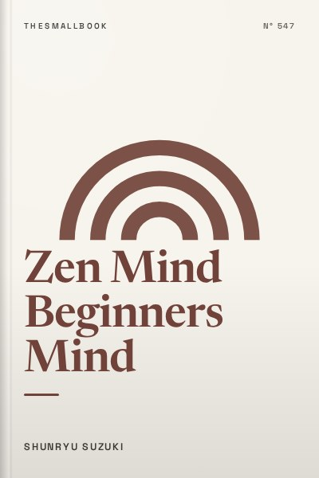

Zen Mind Beginners Mind
Reclaiming fresh curiosity and quiet presence in everything you do.
READ FULL BREAKDOWN (FREE) →The Big Idea
In the beginner's mind there are many possibilities; in the expert's mind there are few.
Key Lessons
The Fresh Mind
Holding fixed assumptions blinds you to what is actually happening in front of you.
Posture as Mind
How you hold your body directly dictates how calm and attentive your thoughts remain.
Non-Attachment to Ideas
Attaching your identity to a particular strategy makes failure feel like personal destruction.
Breathing with the World
Breath is the anchor that pulls racing projections back to the present second.
Simplicity in Action
Doing one thing with total concentration yields more peace than juggling ten shallow concerns.
Nothing Extraordinary
Wisdom is not a secret magical state; it is showing up cleanly for ordinary life.
The Graveyard Proves It
Where this advice breaks: Where this advice breaks: technical surgery or structural engineering requires deep specialized mastery alongside curiosity.
Read the autopsy: quibi-flop →